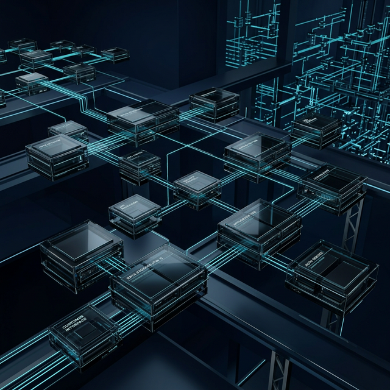

Agenda un diagnóstico de modernización
Recibe un análisis técnico de tu estado actual y una hoja de ruta clara para tu migración resiliente.
- Identificación de riesgos críticos
- Análisis de brechas de cumplimiento
- Estimación de optimización de costos
Ayudamos a bancos, fintechs y empresas reguladas a transformar infraestructura heredada en plataformas cloud seguras, observables y preparadas para crecimiento, cumplimiento y resiliencia.



Stack operativo utilizado en entornos productivos
Mantener sistemas heredados no solo es costoso, es un riesgo para la continuidad de tu negocio.
Vulnerabilidades constantes y costos de mantenimiento que no escalan.
Gestión de identidad rígida que frena la adopción de modelos modernos de seguridad.
Silos de información sin gobierno de datos ni capacidades de colaboración remota segura.
Procesos lentos con RTO y RPO que no garantizan la recuperación ante desastres.
Lentitud y brechas de seguridad en el acceso remoto para tu fuerza de trabajo.
Hardware obsoleto que pone en riesgo el cumplimiento normativo e institucional.
En el sector financiero, cada minuto de inactividad o cada brecha de seguridad se traduce en pérdida de confianza y sanciones económicas. La infraestructura legacy es el "impuesto invisible" que paga tu empresa por no modernizarse.
Un flujo diseñado para garantizar resultados sin poner en riesgo la operación actual.
Trasladamos tus cargas de trabajo críticas a Azure o AWS con impacto cero en la operación.
Blindamos tu infraestructura bajo estándares Zero Trust y normativas del sector financiero.
Evolucionamos tu gestión de identidades hacia modelos híbridos y cloud-native.
Implementamos telemetría avanzada para detectar anomalías antes de que afecten al usuario.
Sistemas de backup y recuperación ante desastres con RTO de minutos, no días.
Migrar a la nube no es solo cambiar de lugar tus servidores; es adoptar una cultura de agilidad y seguridad que permite a tu empresa competir en un mercado digitalmente nativo.
No solo migramos; diseñamos sistemas que resisten fallos y se recuperan automáticamente.
Dominamos los marcos regulatorios que exigen las autoridades financieras.
Somos ingenieros hablando con ingenieros. Cero marketing vacío, solo soluciones técnicas.
Recibe un análisis técnico de tu estado actual y una hoja de ruta clara para tu migración resiliente.